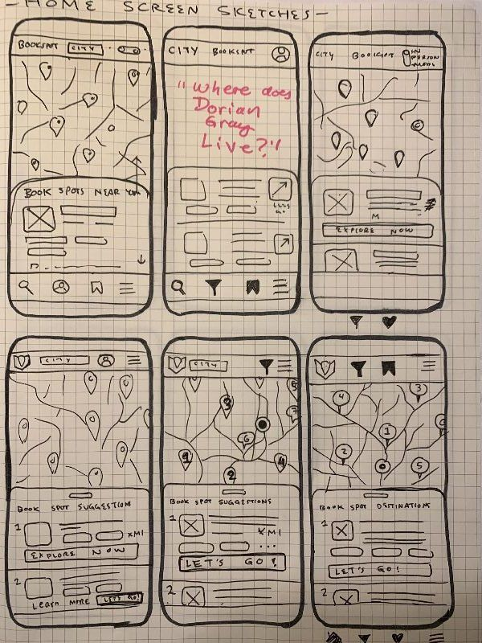
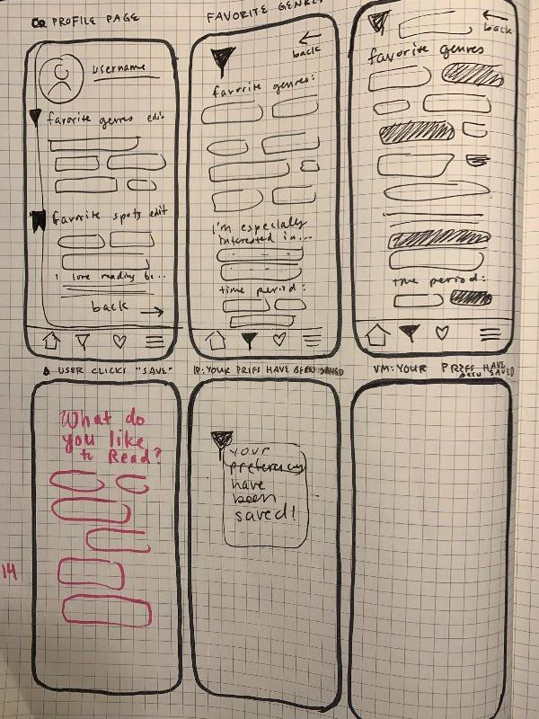
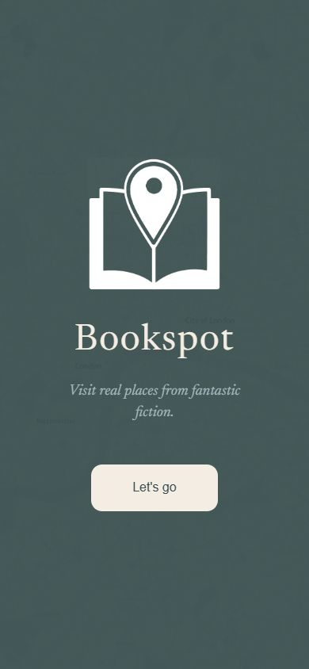
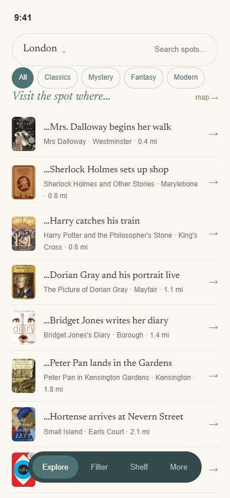
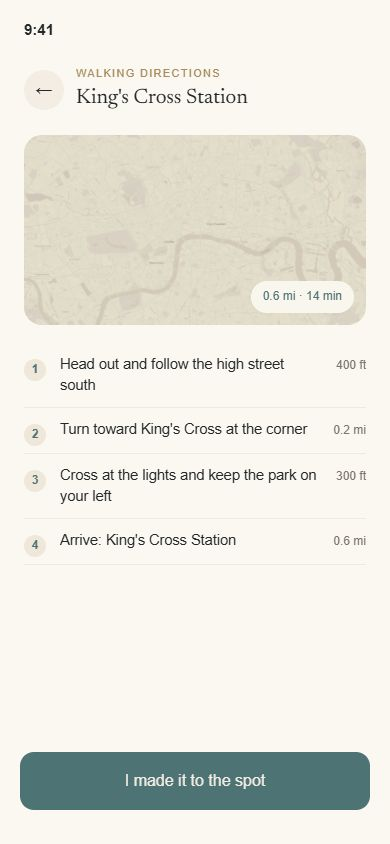
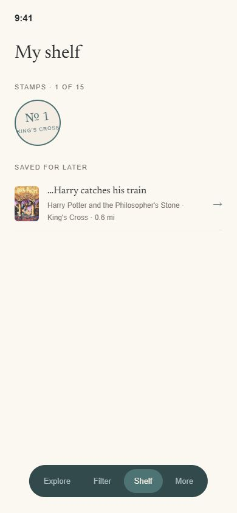

Bookspot
An app for avid readers who want to visit real places from fantastic fiction — like stepping onto Platform 9¾, but for every book you love.
That is not a screenshot — it is the working prototype. Tap through it: pick a city, take the tour, find a spot, walk there, collect the stamp. Scroll on for how it got there.
You can map every bar in London. You cannot map a single novel.
Travellers can find almost anything on Google Maps or Yelp — bars, museums, shopping. But readers who get to know places through books have no way to search for fictional landmarks. Where did Mrs. Dalloway start her walk? Where does Sherlock Holmes set up shop? The information exists, scattered across blogs and book tours, but there is no single place to find it. Travelling bookworms miss out on the joy of literature coming to life.
How could we create an end to end app for readers visiting a new city to explore its literary spots?
Bookspot brings literature to life with a map to beloved book settings — for book worms with a travel bug.
I started with readers, not screens
I sketched a proto persona, then interviewed eight dedicated readers who love to travel. My script moved from reading habits to travel habits to the overlap between the two, closing on one abstract question: imagine your favourite book coming to life around you. Five interviews stood out.
"I like that I can inhabit other worlds and realities, and experience the world through other people's visions."
"Reading is such a great way to calm the mind and learn something new, a great opportunity to transport your mind somewhere else."
"The stories that we tell influence our lives and our social structure and the way we interact with each other in the world."
"I love reading as the opportunity to experience new things, reading stuff that I could never have imagined on my own."
Every conversation circled the same word without my prompting it. Affinity mapping and an empathy map confirmed the pattern: dedicated readers read to feel transported, and they choose travel destinations the same way.
One sentence to design against
Julia, a dedicated reader, wants to visit her favourite book settings while travelling, to feel transported, curious, and joyful.
Everything that made it into the app had to serve that sentence. Everything that did not got cut.
Brainstorm wide, then cut without mercy
Free form brainstorming, a prioritisation matrix, a storyboard and a journey map narrowed dozens of ideas to one core value: seeing fictional places in real life when you travel to a new city.
- City by city lists of featured books
- Map view of book spots plus a list mode
- Filter by genre, author, and era
- Step by step directions to each spot
- Suggested next spots nearby
- Bookstores and libraries, already Yelp-able
- Author pilgrimage sites and events
- Reviews, photo uploads, social feeds
- Illustrations of every book scene
Borrowed: a fast journey with skippable steps. Avoided: locking sign up behind one account.
Borrowed: a distinct, friendly voice and a clear map with pins. Avoided: sending users out of the app to finish a task.
Borrowed: the nostalgia of real book covers, light genre picking. Avoided: the long onboarding rigmarole.
Sketches, wireframes, and ten versions of one flow
I will admit it: I fell into visual design early, exploring two polished directions before the wireframes were ready. Pulling back to paper sketches and lo-fi frames was the best decision of the project, the structure got solid before the paint went on. The user flow below went through ten numbered revisions as testing reshaped it.





Testing rewrote the front door
I ran moderated sessions over Zoom with three tasks: find step by step directions to Mrs. Dalloway's walk, save the spot where Harry Potter catches his train, and filter to 21st century literary fiction by women of colour. The feedback changed three big things.
Testers wanted context before exploring, so a three step tour now opens the app, skippable, per Audible's lesson.
Some testers wanted a longer scan of spots than the map allowed, so home gained a map and list toggle.
Location and account requests moved deeper into the flow, users explore first, commit later.
Sage & parchment, four years wiser
The bootcamp prototype earned its stamp, and the design kept evolving. This is Bookspot as I would ship it today: the same sage and parchment soul with a full bleed map, book covers as pins, chip filters, and collectible stamps. It is fully clickable — tap through onboarding, find a spot, get directions, collect your stamp.
Bookspot, 2026
Tap through onboarding, find a spot, get directions, collect a stamp.








Three lessons
I love making things beautiful, and the polish lands better when it is informed by lo-fi mockups and testing first.
Critique from classmates and instructors reshaped the flow more than any solo iteration. Feedback loops stay in my process.
This project made Figma a home base, components, variants and clickable prototypes carried every phase after paper.
Bookspot is where my UX habit started: research first, polish second. No dashboards on this one, just listening. It is also the reason the analytics work later came out the way it did, because writing a tracking plan around business questions is the same discipline as writing a design around an interview.
open to marketing operations, analytics and martech roles
Let's talk.
Remote, or Albuquerque and hybrid. If you want the architecture behind any of the work here, ask me and I will walk you through it.